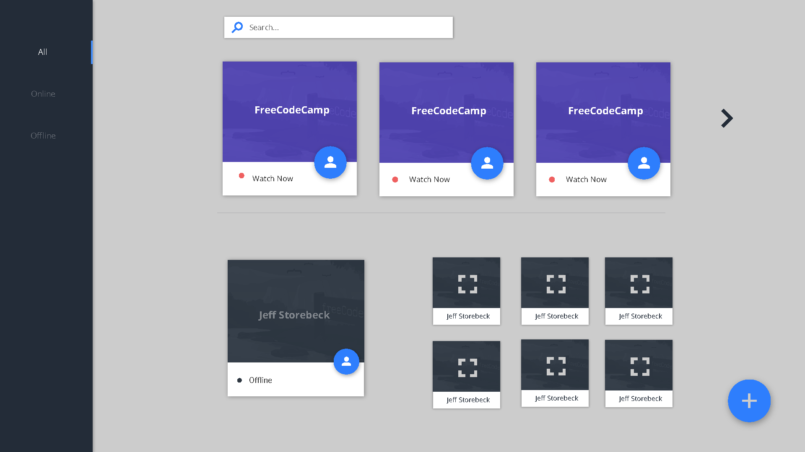
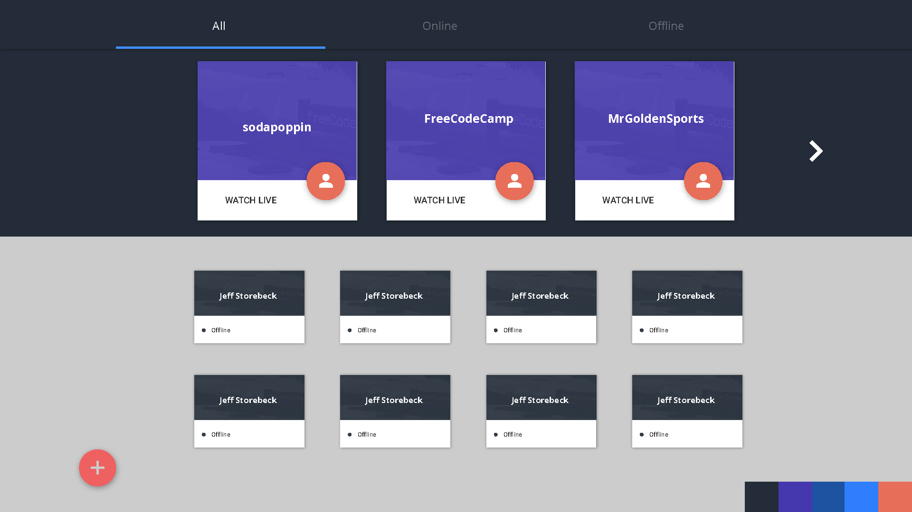
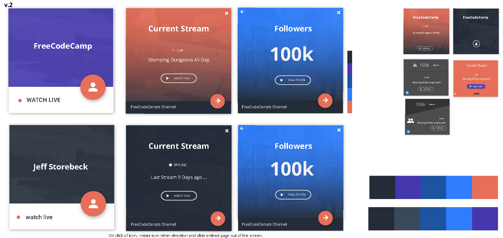
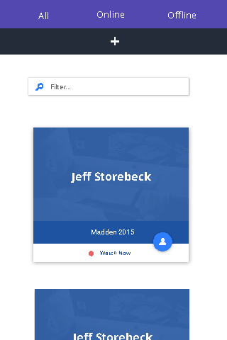

Twitch Viewer
September 14th, 2015Project Description
An app used to track the status of various twitch channels. By adding a channel to the front page the user has access to that channel's current status, live or offline, and additional information about the current broadcast. It should also be noted that this project was inspired by Free Code Camp's Twitch Tv Front End Development Project.
Used
Angular (Custom Directives, Factories, Services, Routing), Grunt, Sass, Github Pages
Design
Similar to most of the applications I write, a majority of the layout is first designed in illustrator.
This app is heavily influenced by Google's Material Design Light Framework. With that said, an overwhelming majority of the application was written without the use of the framework specific code. I specifically liked the way Google displayed information via "cards" so I used a similar design for the channels. The animation on each card was inspired by many projects on Dribble that used interesting animations to transition screens.
Here are a few mockups that never made it to the final application.
 
It took me a really long time to decide on what card design I liked the best. I went back and forth with the card I was going to use. This added many unessecary hours to the development process. Moving forward I understand the importance of pushing my designs closer and closer to a 100% complete layout. I know calling a design 100% is unreasonable as there are always updates and changes but I believe striving for it certainly saves me a significant amount of time. Here are some of the versions I worked with.

In previous projects, mobile screen sizes would quickly expose the limitations of my code. With this project, I made a conscious effort to ensure the mobile experience was on par with the viewing experience on larger devices.
I decided to design a mobile specific version of the site. To implement this, I used media queries and JavaScript code to manipulate the DOM on the initial load and or screen resizing.

Challenges
Asynchronous JavaScript
Because each channel's card or component required information from Twitch's API, many asynchronous ajax calls were needed. Each ajax call for an individual car's information took an unknown amount of time to complete. In short, I needed to ensure that certain blocks of code, waited until other blocks of code where complete.
This is where promises came in. Specifically, I used Promise.all and Promise.prototype.then statements to control the execution of code.
Repeating Components
Looking at the design of this app you will see it called for multiple cards that all required similar functionality. Initially I attempted to use built in angular directives to display the cards as if they were a list of information. Unfortunately to implement specific functionality I needed to write a custom directive. Once I understood the syntax and workings of angular directives I was able to write code once and use it for each component.